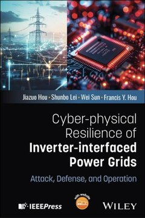
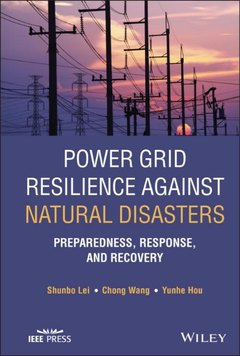
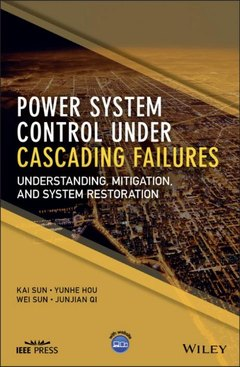
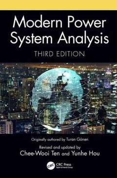
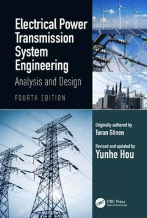

Inaugural Faculty Fellow, Power and Energy Center (PEC)
427 Whittemore Hall, Blacksburg, VA 24061
fyhou [at] vt.edu
Google Scholar · ORCID · GitHub
I study how power grids survive and recover: how to bring a system back from a blackout, how far it can be pushed before it fails, and what changes when converters and AI data centers become the dominant players.
Nearly two decades of work on power system restoration produced the System Restoration Navigator, commercialized by EPRI and widely used in the power industry, and more recently the open-source GriRes Suite. The same habit runs through the rest of my work: find the assumption that has become too expensive to ignore, and build the theory that does not need it. Decision-dependent uncertainty, converter-mediated resources, and AI data center loads each started that way. The Research page says more.
Now
- Joined Virginia Tech in August 2026 after seventeen years at the University of Hong Kong.
- Teaching ECE 4334, Power System Analysis and Control, Fall 2026.
- New book: Cyber-physical Resilience of Inverter-interfaced Power Grids: Attack, Defense, and Operation (with J. Hou, S. Lei, W. Sun), Wiley-IEEE Press, 2026.
- The GriRes Suite (GRIM and DC2AC) is released under GPL-3.0 on GitHub.
- Recruiting PhD students. See Prospective students.
Books
    
Three Wiley-IEEE Press monographs and two CRC Press textbooks. Details on the Publications page.
Recent honors
- Fellow, IEEE (Class of 2026), for contributions to theory and decision support tools for power system restoration.
- Inaugural Faculty Fellow, Power and Energy Center, Virginia Tech, 2026.
- Top 1% Scholar Worldwide, Essential Science Indicators (Clarivate), 2021–present.
- World's Top 2% Scientists, Stanford University/Elsevier, annual lists 2022–2026 and career-long list 2023–2026.
- 2021 IEEE Transactions on Smart Grid Outstanding Paper Award (with S. Lei, C. Chen, Y. Li).
- Chair, IEEE PES Task Force on Power System Restoration with Renewable Energy Sources, 2021–.